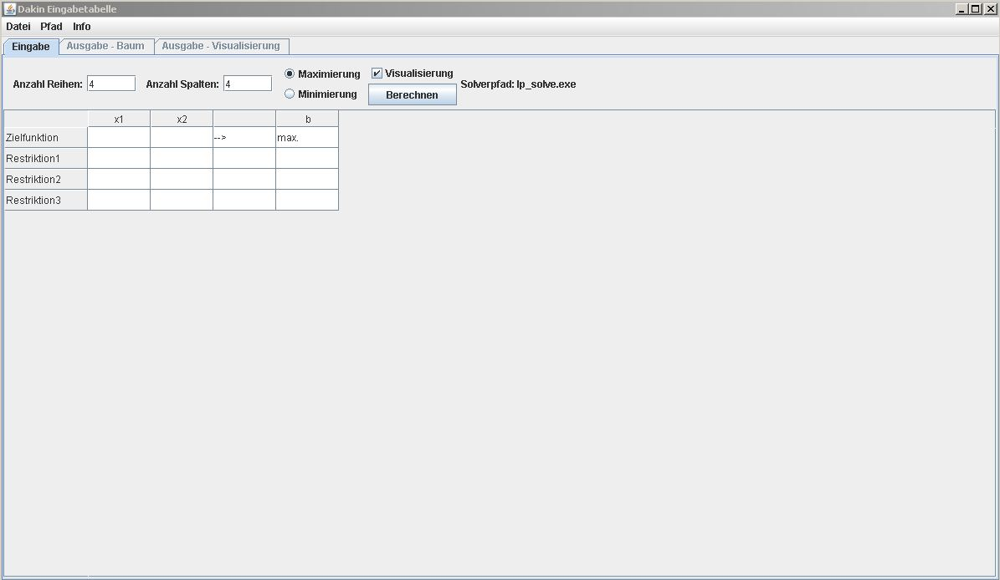
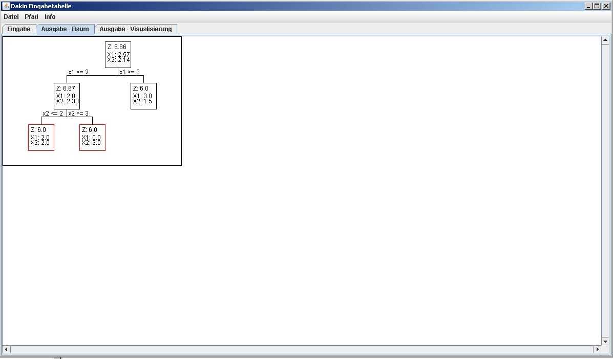

© 2013
by Björn Burandt, Stephan Keßler
Mit dem Programm „Dakin 2003 v2.0“ kann aus einem ganzzahligem Optimierungsproblem eine ganzzahlige Lösung berechnet werden. Dies geschieht über einen Lösungsbaum oder über die Erstellunge von grafischen Lösungsräumen.
Über ein Eingabefenester kann eine gespeicherte .dat Datei geöffnet werden.
Speicher die Daten aus dem aktuellen Eingabefenster in einer .dat Datei
Beendet das Programm
Über diesen Punkt, kann der Solver LP Solve, auf einem anderen Pfad angesteuert werden.
Hier kann man diese Hilfeseite zur Bedienung des Solvers "Dakin 2003 v2.0" aufgerufen werden.
Über diese Funktionalität, lässt sich eine Information über die Entwickler dieses Tools einblenden.
Das Programm startet bei Aufruf, mit einer Default Eingabematrix von 4 Reihen, 4 Spalten und einer Maximierung der Zielfunktion. Die Anzahl der Reihen und Spalten können unter den Feldern "Anzahl Reihen" und "Anzahl Spalten" eingestellt werden. Dies MUSS mit Enter bestätigt werden, damit die Änderung übernommen wird. Die Maximierung oder Minimierung der Zielfunktion kann über die Radio Buttons "Maximierung" und "Minimierung" ausgewählt werden. Unter dem Punkt "Visualisierung", kann man entscheiden ob man eine grafische Lösung angezeigt haben möchte oder nicht und kann dann als letzten Schritt, unter dem Button "Berechnen", die Berechnung der Lösung starten. Die Felder der Matrix sind alle mit einem einfach Klick auswählbar und können Beschrieben werden
BITTE BEACHTEN: Bei Maximierung müssen alle Restriktionen <= sein, bei Minimierung müssen alle >= sein Nach dem Drücken des "Berechnen" Buttons, öffnet sich automatisch der Tab "Ausgabe - Baum". Dieser Reiter wird, erst aktiviert, wenn eine Berechnung durchgeführt wurde. Davor lässt sich dieses Fenster noch nicht öffnen. Ist die Berechnung erfolgt, kann man an dem Lösungsbaum erkennen, welche Teilschirtte das System findet und diese dann immer weiter aufsplittet, bis eine ganzzahlige Lösung erreicht ist.

© 2013 Fachhochschule Konstanz